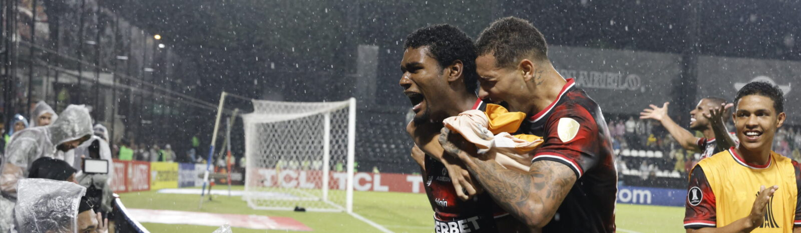

CONMEBOL Libertadores
No Paraguai, São Paulo vence o Libertad-PAR pela CONMEBOL Libertadores
Na noite desta quarta-feira (23), o São Paulo venceu o Libertad-PAR por 2 a 0, no Estádio Tigo La Huerta, em Assunção (PAR), pela terceira rodada da fase do grupos da CONMEBOL Libertadores. Lucas Ferreira e André Silva marcaram os gols são-paulinos.
Na etapa inicial da partida, o Tricolor pressionou o adversário, criou algumas chances e conseguiu levar perigo ao gol do adversário. Aos 15 minutos, Wendell recebeu passe de Marcos Antonio e cruzou para André Silva, que finalizou para fora.
Na volta do intervalo, aos 8 minutos, Marcos Antonio arriscou o chute, sem sucesso. Aos 10, após passe de Lucas Ferreira, Ferreira bateu para fora. Aos 16, Lucas Ferreira recebeu a bola de André Silva, invadiu a área, finalizou de perna esquerda e abriu o placar para o Tricolor. Aos 22, a arbitragem marcou pênalti para o Libertad, mas Melgarejo mandou a bola no travessão.
Aos 37, Ferraresi cruzou na medida para André Silva cabecear e ampliar o placar para o São Paulo. Aos 48, Luciano marcou o seu, mas a arbitragem marcou impedimento e anulou o gol.
A próxima partida do Tricolor será contra o Ceará, no sábado (26), às 18h30, na Arena Castelão, em Fortaleza, pela sexta rodada do Brasileirão.
LIBERTAD-PAR 0 x 2 SÃO PAULO
Local: Estádio Tigo La Huerta, em Assunção (PAR)